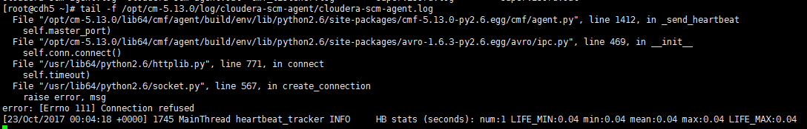
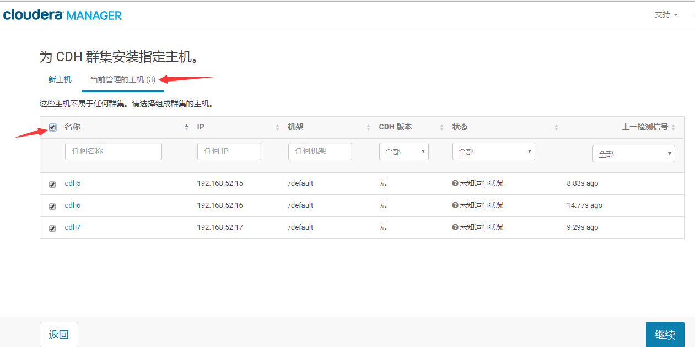
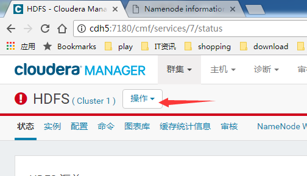
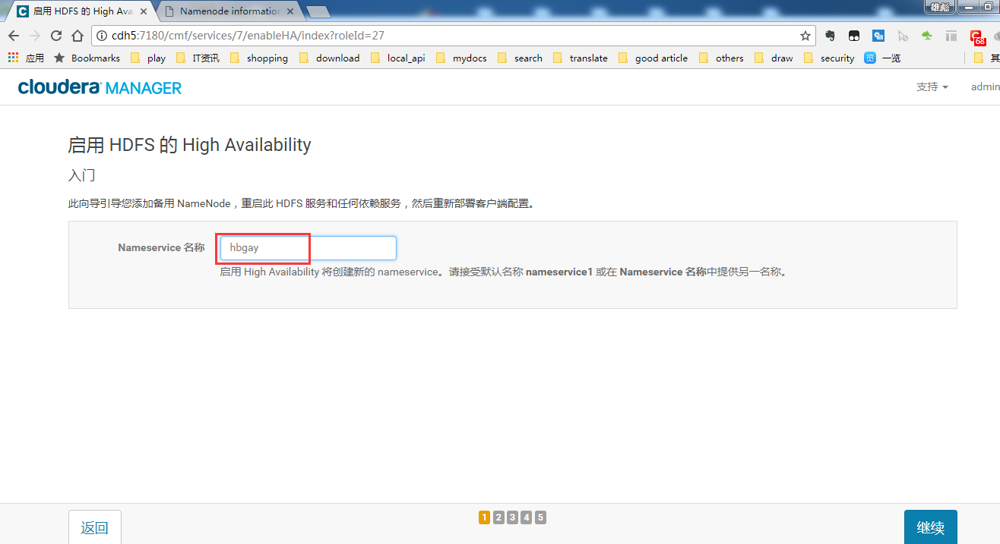
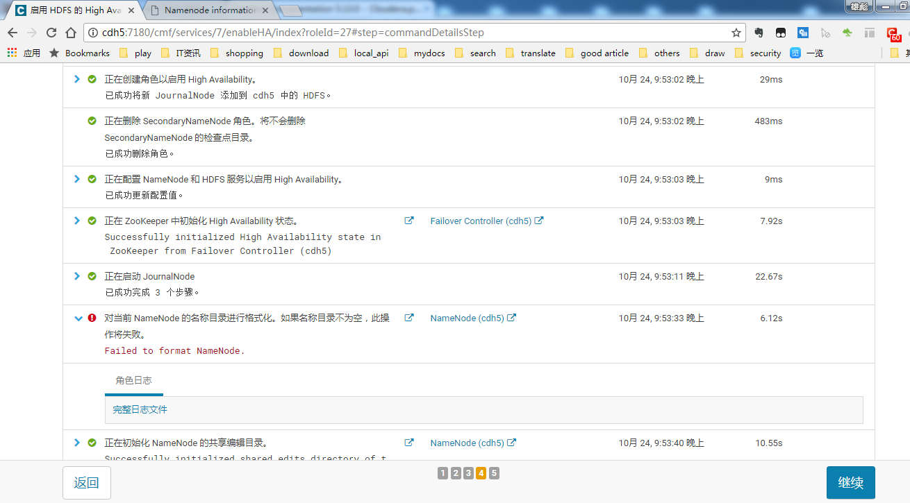

CDH5安装
文章目录
01-Cloudera Manager及CDH安装
0. 简述
相对于原生的 *Hadoop平台*，选择安装*CDH*的原因有如下几点： * CDH 相对稳定 * CDH 解决了 Hadoop 生态圈各组件的版本对应关系 * Cloudera Manager 可以很方便地监控、管理、扩展节点及组件 * 当版本升级时，采用 CDH 更方便
0.1 搭建环境说明
下面将从零开始离线搭建 CDH Cluster （适用于内网环境），采用的操作系统为 CentOS6.5 ，虚拟机数量为3台，*CentOS*为最小化安装。
| 节点名称 | 系统名称 | 配置 |
|---|---|---|
| 192.168.52.15（cdh5） | CentOS6.5 | 1核/4G/20G |
| 192.168.52.16（cdh6） | CentOS6.5 | 1核/1G/20G |
| 192.168.52.17（cdh7） | CentOS6.5 | 1核/1G/20G |
提醒：请根据真实环境选择硬件配置，上表仅为本机虚拟机配置。
0.2 安装包
由于为离线安装，请提前准备如下安装包。
JDK安装包（Linux）：
| 名称 | 说明|
| :——– | ——–:|
| jdk-8u102-linux-x64.tar.gz| jdk1.8|
MySQL相关安装包：
| 名称 | 说明 |
|---|---|
| mysql-5.7.16-1.el6.x86_64.rpm-bundle.tar | MySQL的RPM包（适用于CentOS或RedHat 6） |
| mysql-connector-java-5.1.44.jar | MySQL的*jdbc*驱动包 |
cloudera CDH相关安装包：
| 名称 | 说明 | |
|---|---|---|
| CDH-5.13.0-1.cdh5.13.0.p0.29-el6.parcel | 用于做本地软件库，包含*CDH*、*Hive*等组件，各节点最终从该库下载相应组件到本地。 | |
| CDH-5.13.0-1.cdh5.13.0.p0.29-el6.parcel.sha1 | 本地软件库*sha*的值，该文件存在且值正确时才不会去远程重新下载本地软件库。 | |
| manifest.json | parcel软件库中的包依赖关系 | |
| cloudera-manager-el6-cm5.13.0_x86_64.tar.gz | Cloudera Manager及Agent安装包 |
0.3 安装说明
*CDH*的安装采用*root*用户安装，由于*CM*支持的*single user mode*有一些功能是不支持的，所以暂时先以*root*安装并运行程序。
1. 基础环境配置
1.1 hostname配置
临时修改：
1
|
hostname cdh5 |
永久修改：
1
|
vim /etc/sysconfig/network |
提示： > 临时修改即时生效，重启失效。 > 永久修改即时不生效，重启才生效。
按下表中列出的逐个为各节点配置*hostname*。
| IP | hostname | 说明 |
|---|---|---|
| 192.168.52.15 | cdh5 | 主节点 |
| 192.168.52.16 | cdh6 | Worker节点 |
| 192.168.52.17 | cdh7 | Worker节点 |
1.2 hosts文件配置
通过*hosts*配置，方便各节点之间直接采用*hostname*访问，省去*ip*访问。*hosts*配置需要在所有节点上配置。
执行命令编辑：
1
|
vim /etc/hosts |
1.3 ssh免密码登陆配置
默认情况下，使用*ssh*访问节点时需要密码的。但是*hadoop*或*cdh*都需要采用*ssh*免密码登陆以便管理各节点。
各节点生成公钥 在各节点上生成公钥，然后把所有节点的公钥汇集到一起形成*authorized_keys*文件。
生成公钥：
1
|
ssh-keygen -t rsa -P '' |
*-P*参数表示密码，此处采用空串，即无需密码。回车后会在当前用户*home*目录生成公、私钥对。
拷贝各节点公钥
|
|
在节点*192.168.52.15*上将所有公钥合并到*authorized_keys*上。
1
|
cat id_rsa.pub >> authorized_keys |
拷贝authorized_keys到所有节点
|
|
所有节点上修改文件及目录权限
|
|
测试ssh登陆 在各节点上*ssh*登陆所有节点（包括自己）：
|
|
如果均可免密码登陆就说明配置成功。
*提示：*如果登陆过程中弹出如下提示，需要将*host*添加到*know_hosts*文件时，输入*yes*即可。

1.4 防火墙配置
防火墙修改的配置脚本如下：
1 2 3 4 5 6 7 8 9 10 11 12 13 14 15 16 17 18 19 20 21 22 23 24 25 26 27 28 29 30 31 32 33 34 35 36 37 38 39 40 41 42 43 44 45 46 47 48 49 50 51 52 53 54 55 56 57 58 59 |
#!/bin/bash BASEDIR=$(cd `dirname $0`;pwd) # 脚本当前所在目录 EXTIF="eth0" # 这个是可以连上 Public IP 的网络接口 INIF="" # 内部 LAN 的连接接口；若无则写成 INIF="" I NNET="192.168.52.0/24" # 若无内部网域接口，请填写成 INNET="" export EXTIF INIF INNET # 第一部份，针对本机的防火墙设定！########################################## # 1. 先设定好核心的网络功能： echo "1" > /proc/sys/net/ipv4/tcp_syncookies # echo "1" > /proc/sys/net/ipv4/icmp_echo_ignore_broadcasts for i in /proc/sys/net/ipv4/conf/*/{rp_filter,log_martians}; do echo "1" > $i done for i in /proc/sys/net/ipv4/conf/*/{accept_source_route,accept_redirects,send_redirects}; do echo "0" > $i done # 2. 清除规则、设定默认政策及开放 lo 与相关的设定值 PATH=/sbin:/usr/sbin:/bin:/usr/bin:/usr/local/sbin:/usr/local/bin; export PATH iptables -F iptables -X iptables -Z iptables -P INPUT DROP iptables -P OUTPUT ACCEPT iptables -P FORWARD ACCEPT iptables -A INPUT -i lo -j ACCEPT iptables -A INPUT -m state --state RELATED,ESTABLISHED -j ACCEPT # 3. 启动额外的防火墙 script 模块 if [ -f $BASEDIR/iptables.deny ]; then sh $BASEDIR/iptables.deny fi if [ -f $BASEDIR/iptables.allow ]; then sh $BASEDIR/iptables.allow fi # 4. 允许某些类型的 ICMP 封包进入 # AICMP="0 3 3/4 4 11 12 14 16 18" # ping 走的是8这个类型 # for tyicmp in $AICMP # do # iptables -A INPUT -i $EXTIF -p icmp --icmp-type $tyicmp -j ACCEPT # done iptables -A INPUT -i $EXTIF -p icmp -j ACCEPT # 允许所有ICMP协议的包 # 5. 允许某些服务的进入，请依照你自己的环境开启 # iptables -A INPUT -p TCP -i $EXTIF --dport 22 --sport 1024:65534 -j ACCEPT # SSH # iptables -A INPUT -p TCP -i $EXTIF --dport 80 --sport 1024:65534 -j ACCEPT # www iptables -A INPUT -s 192.168.52.0/24 -j ACCEPT # 允许192.168.52.1-192.168.52.255段IP访问 /etc/init.d/iptables save |
注意：
|
|
这个网段配置请根据实际情况进行修改。
将*iptables.rule*拷贝到所有脚本上执行。
|
|
1.5 selinux配置
在所有节点上永久禁用*SELinux*。
临时禁用：setenforce 0
永久禁用（重启后生效）：修改*/etc/selinux/config*文件，将*SELINUX=enforcing*修改为*SELINUX=disabled*。
16. yum源配置
进入/etc/yum.repos.d/目录修改yum源地址为生产环境下的yum源地址
2. JDK安装
2.1 卸载已有OpenJdk
|
|
卸载掉上面列举的两个jdk
|
|
2.2 安装
- 将
jdk-8u102-linux-x64.tar.gz上传到各节点上 将该包解压缩到*/usr/java*目录下
1 2mkdir /usr/java tar -zxvf jdk-8u102-linux-x64.tar.gz -C /usr/java/
2.3 设置环境变量
|
|
|
|
java -version查看是否生效
3. NTP时间服务器配置
在集群中，时间同步非常重要，为避免各种各样的问题，这里为所有节点安装*ntp*服务。其中*192.168.52.15*节点作为时间服务器节点，其它节点则从该节点同步时间。
3.0 设置时区
为所有节点设置时区为上海
|
|
3.1 安装ntp服务
为所有节点安装*ntp*服务。
|
|
3.2 配置时间服务器节点
在时间服务器节点（192.168.52.15）上编辑/etc/ntp.conf
|
|

然后启动*ntpd*服务
|
|
查看端口，检查*ntpd*服务是否开启
当与上游节点同步后，可看到如下信息
或者看下是否有跟上游节点联机
3.3 配置同步节点
任意一个同步节点上，安装*nc*，测试下时间服务器节点的*123*端口能否访问。
|
|
在其它同步节点上编辑/etc/ntp.conf
|
|
然后启动*ntpd*服务
|
|
*提示：*同步需要间隔一段时间的，请先静候几分钟再看是否同步成功。
将*ntp.conf*拷贝到所有节点，shell示例：
|
|
4. MySql安装配置
4.1 MySQL服务安装
上传MySQL安装包：
将*MySQL*安装包mysql-5.7.16-1.el6.x86_64.rpm-bundle.tar拷贝到节点*cdh7*上，在该节点部署*MySQL*服务。
|
|
安装MySQL：
|
|
4.2 MySQL配置
修改存储路径：
|
|
尝试启动服务：
|
|
获取初始随机的root密码：
grep 'temporary password' /var/log/mysqld.log
注意：这个日志路径为*mysql.cnf*中配置的路径
尝试连接MySQL：
mysql -h localhost -uroot -p

解决mysql.sock的问题：
1
|
ERROR 2002 (HY000): Can't connect to local MySQL server through socket '/var/lib/mysql/mysql.sock' (2) |
这个问题是由于在*/etc/my.cnf*中把*socket*的路径给改了。
使用软连接
ln -s /data/mysql/mysql.sock /var/lib/mysql/mysql.sock

4.2.1 root远程登陆配置
*MySQL*中不再单一地以用户名作为凭证，而是以用户名+来访问IP作为凭证，即用户名+来访问IP类似于一个唯一的用户。
初始化root@localhost访问密码：
ALTER USER 'root'@'localhost' IDENTIFIED BY '123456';
因为密码太简单，被拒绝了。重新设置一个复杂的密码吧。
ALTER USER 'root'@'localhost' IDENTIFIED BY 'Hbcloud67122390!';
设置root远程访问：
先把密码校验策略关闭
uninstall plugin validate_password;
设置*root@%*远程*root*访问
GRANT ALL PRIVILEGES ON *.* TO 'root'@'%' IDENTIFIED BY '123456' WITH GRANT OPTION;
刷新权限
FLUSH PRIVILEGES;
检验root远程访问： 在其它节点上安装*MySQL Client*：
|
|
该节点上连接*cdh7*节点上的*mysql*数据库：
5. Cloudera基础环境准备
5.1 JDK安装
5.2 安装依赖包
在所有节点上安装以下依赖包：
整理后的安装命令如下：
|
|
5.3 上传安装包
前面也提到过，cloudera-manager-el6-cm5.13.0_x86_64.tar.gz是*Cloudera Manager*及*Cloudera Agent*的安装包。
将该包上传到主节点（cdh5）的*/opt*目录，请保持这个默认目录。
然后解压缩
|
|
5.3 创建用户
在所有节点上创建*cloudera-scm*用户及组。
useradd --system --home=/opt/cm-5.13.0/run/cloudera-scm-server --no-create-home --shell=/bin/false --comment "Cloudera SCM User" cloudera-scm
注意：*/opt/cm-5.13.0*上目录是安装目录
5.4 初始化数据库
将驱动包mysql-connector-java-5.1.44.jar拷贝到目录/opt/cm-5.13.0/share/cmf/lib下。
Cloudera Manager的管理库初始化：
/opt/cm-5.13.0/share/cmf/schema/scm_prepare_database.sh mysql -h cdh7 -uroot -p123456 --scm-host cdh5 scm scm scm
提示：
* -h cdh7指定*MySQL*服务器地址
* -uroot指定*MySQL*连接账户
* -p123456指定*MySQL*连接账户密码
* --scm-host cdh5指定*Cloudera Manager*的服务器地址
* scm scm scm可以不用管，照抄官网的
创建其它组件的数据库：
使用*root*账户登陆到*MySQL*数据库，依次创建如下数据库
* Hive数据库
create database hive DEFAULT CHARSET utf8 COLLATE utf8_general_ci;
集群监控数据库
create database amon DEFAULT CHARSET utf8 COLLATE utf8_general_ci;HUE数据库
create database hue DEFAULT CHARSET utf8 COLLATE utf8_general_ci;Oozie数据库
create database oozie DEFAULT CHARSET utf8 COLLATE utf8_general_ci;
5.5 配置环境变量
在所有节点上配置环境变量CMF_DEFAULTS，指向*CM*目录。
|
|

然后使之立即生效
source /etc/profile.d/java.sh
提示：如果其它会话窗口不生效，请关闭会话窗口重新打开即可。
检查是否生效：
5.7 修改启动脚本
修改server启动脚本：
找到/opt/cm-5.13.0/etc/init.d/cloudera-scm-server文件，第71行，替换为：
|
|
修改agent启动脚本：
找到/opt/cm-5.13.0/etc/init.d/cloudera-scm-agent文件，第73行，替换为：
|
|
6. Cloudera Agent安装
6.1 配置Server端地址
在主节点*cdh5*上，修改/opt/cm-5.13.0/etc/cloudera-scm-agent/config.ini配置文件，指定*CM Server*地址为*cdh5*。
然后在主节点*cdh5*上将整个*cm-5.13.0*文件夹拷贝到其它所有*Agent*节点上。
|
|
6.2 启动
$CMF_DEFAULTS/etc/init.d/cloudera-scm-agent start
查看启动日志：
1
|
tail -f /opt/cm-5.13.0/log/cloudera-scm-agent/cloudera-scm-agent.log |

此时可能会报错，因为*Cloudera Manager Server*还未启动。先不管错误。
6.3 配置开机自启
执行如下命令：
|
|
7. Cloudera Manager
7.1 启动
在主节点*cdh5*上启动*Cloudera Server*服务
$CMF_DEFAULTS/etc/init.d/cloudera-scm-server start
查看启动日志
tail -f $CMF_DEFAULTS/log/cloudera-scm-server/cloudera-scm-server.log
7.1.1 配置开机自启
执行如下命令：
|
|
7.2 登陆
因为在虚拟机上，本机运行*Cloudera Manager*耗时几分钟，所以请耐心等待。
待服务启动完毕后，访问地址：http://cdh5:7180进入管理页面。
初始管理账户密码：admin/admin，请勿先登陆，待配置*Parcel*后再玩。
8. CDH5安装
8.1 使用Parcel配置本地软件库
上传如下３个文件到主节点*cdh5*的/opt/cloudera/parcel-repo目录
* CDH-5.13.0-1.cdh5.13.0.p0.29-el6.parcel
* CDH-5.13.0-1.cdh5.13.0.p0.29-el6.parcel.sha1
* manifest.json
然后重命名CDH-5.13.0-1.cdh5.13.0.p0.29-el6.parcel.sha1为CDH-5.13.0-1.cdh5.13.0.p0.29-el6.parcel.sha。（即去掉最后的那个*1*）
最后重启*CM server*服务：
$CMF_DEFAULTS/etc/init.d/cloudera-scm-server restart
8.2 选择版本
使用*admin/admin*登陆Cloudera Manager
同意许可条款
选择免费版（CDH5后再没有50个节点的限制了）
8.3 选择要管理的Hosts
勾选需要添加到集群中的节点（启动了*Agent*后就会出现在这里）： 
8.4 选择软件包
这里默认选择的是刚才安装的本地软件库。
然后等待*CM*将软件包分发到所有节点上（实际上是拷贝到/opt/cloudera/parcels目录下）。
软件包分发完成后，点击继续会开始主机检查。
8.5 选择要安装的服务
请根据实际情况选择要安装的服务。
8.6 为各Hosts分配服务角色
然后为每个节点分配角色，实际上就是哪个节点安装哪些服务。请根据实际情况选择。
8.7 为各服务配置数据库设置
根据刚才在*MySQL*中建的库，依次填写正确。
然后，点击测试连接。
提示：在/opt/cm-5.13.0/run/cloudera-scm-agent/process目录会显示正在运行的如*数据库连接测试*等任务，此处可以看到任务运行的日志信息。
说明：由于本机虚拟机环境下，多次连数据库响应超时，所以多次连接失败，重新点测试连接就可以了，多试几次。
8.8 安装
修改一些核心配置：

然后就进入了安装界面：
安装过程中可能会出现异常并安装失败，待错误排查完成后，点击Resume按钮继续安装。
8.9 添加MySQL驱动包到Hive安装目录
找到*Hive*安装在哪个节点上，此处为*cdh5*（注意先前分配服务角色时的机器）。将*MySQL*驱动包上传到目录/opt/cloudera/parcels/CDH-5.13.0-1.cdh5.13.0.p0.29/lib/hive/lib下。
然后点击*Resume*继续安装。

8.10 添加MySQL驱动包到Ooize目录
找到*Ooize*安装在哪个节点上，拷贝*MySQL驱动包到/var/lib/ooize*目录下。
然后点击*Resume*继续安装。
8.11 进入控制台
9. 测试安装
9.1 检查所有Host的Heartbeats
9.2 运行一个MapReduce Job
9.3 启动Hue检查
10. 启用/禁用HDFS HA
10.1 启用HDFS HA
选择群集下的HDFS服务，点击右侧的操作下拉框： 
然后选择启用 High Avaliable：
输入集群*Nameservice*名称，如hbgay： 
选择Standby NameNode及JournalNode所在主机：
选择存储目录：
等待命令执行完成：
命令执行完成后： 
注意：这里的对当前*NameNode*格式化这个执行失败，可以不用管。因为当前*NameNode*本身有数据，所以格式化失败，这个不影响转换为*HA*。
10.2 禁用HDFS HA
选择群集下的HDFS服务，点击操作按钮：
操作下拉框中选择禁用 High Avaliable：
然后选择要保留的NameNode以及SecondaryNameNode：
配置SecondaryNameNode的存储目录：
接下来，等待这一系列命令执行完毕即可：

11. 配置其它组件支持HDFS HA
11. 附录：cloudera相关安装包下载地址
cloudera-manager-el6-cm5.13.0_x86_64.tar.gz： http://archive.cloudera.com/cm5/cm/5/
提示： * *el6*对应为*RedHat6*或CentOS6 * *cm5.13.0*为版本号，请与*CDH*保持一致 * *x86_64*请根据*CPU*选择
CDH-5.13.0-1.cdh5.13.0.p0.29-el6.parcel： http://archive.cloudera.com/cdh5/parcels/5.13.0/
文章作者 张雄彪
上次更新 2019-08-25